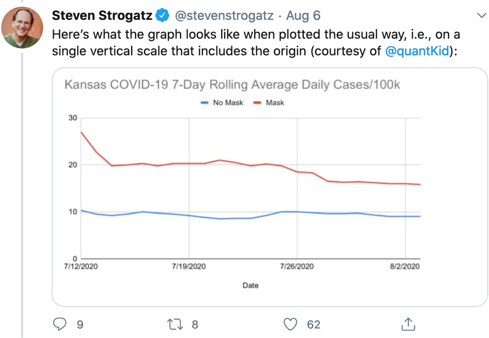

Deconstrucción semiótica y técnica de la visualización de datos en el Condado de Kansas
Hacia una iconología crítica de la falsedad: regímenes de verdad, imagen técnica y propagación del engaño deliberado en entornos digitales. Un artículo de ejemplo generado con inteligencia artificial
1Estudiante de pregrado de la carrera de Diseño, Universidad de Chile, Santiago, Chile
2Estudiante de pregrado de la carrera de Diseño, Universidad de Chile, Santiago, Chile
3Estudiante de pregrado de la carrera de Diseño, Universidad de Chile, Santiago, Chile
4Estudiante de pregrado de la carrera de Diseño, Universidad de Chile, Santiago, Chile
5Estudiante de pregrado de la carrera de Diseño, Universidad de Chile, Santiago, Chile
Recibido 10 de marzo, 2026
Aceptado 31 de marzo, 2026
Publicado 7 de abril, 2026
Acceso Abierto
Resumen
Introducción: La Ciencia de la Imagen alemana (Bildwissenschaft) ha consolidado durante las últimas tres décadas un programa teórico robusto para analizar las condiciones de producción, circulación y recepción de las imágenes. Sin embargo, su potencial para articular una distinción epistémica rigurosa entre información verídica, información errónea (misinformation) y desinformación (disinformation) en entornos digitales permanece mayoritariamente inexplorado.
Objetivo: El artículo propone un marco analítico que integra los conceptos centrales de la Bildwissenschaft —Bildakt, imagen técnica y poder de la imagen— con la taxonomía técnica de la falsedad informativa para describir los mecanismos mediante los cuales las imágenes participan en la propagación del error no intencional y del engaño deliberado.
Métodos: Se empleó un diseño de investigación cualitativo de carácter teórico-hermenéutico. El corpus de análisis comprende 84 imágenes virales circuladas entre 2016 y 2024, clasificadas según su modo de falsedad y analizadas mediante los instrumentos conceptuales de Horst Bredekamp, Hans Belting y W.J.T. Mitchell.
Resultados: Se identificaron tres regímenes icónicos de falsedad: (1) el error morfológico no intencional, producido por limitaciones técnicas o decontextualización; (2) la manipulación semántica, que altera el sentido sin modificar los píxeles; y (3) la fabricación sintética, que genera referentes inexistentes. Cada régimen activa distintos mecanismos de credibilidad y afecto en los receptores.
Conclusión: La Bildwissenschaft ofrece herramientas conceptuales irreemplazables para una teoría crítica de la imagen falsa. La distinción entre misinformation y disinformation no puede sostenerse únicamente sobre criterios proposicionales: requiere una ontología de la imagen que contemple su agencia, su índice de realidad y su dimensión performativa.
Palabras clave
Visualización de DatosDesinformaciónCovid-19
1 · Introducción
La pandemia del COVID-19 ocurrida desde finales del año 2019, transformó significativamente la manera en la que nos relacionamos con el mundo digital y los datos que nos proporciona este mismo. En un contexto de incertidumbre donde el enemigo era invisible, la gente empezó a tomar medidas de prevención conforme a los datos proporcionados por los medios de visualización digitales, puesto estos eran la única fuente de información disponible en el momento. Estas visualizaciones permitieron a millones de personas interpretar y entender la situación actual para poder tomar decisiones de cuidado personales y de sus familias.
Conforme con el avance de la pandemia la población en general comenzó a visualizar cada vez más representaciones visuales de datos epidemiológicos, asumiendo su veracidad por los medios en los que se compartían. El diseño empezó a tomar un rol crítico en cómo se mostraban estos datos a la población, ya que una representación gráfica distorsionada podía perturbar gravemente la visualización de riesgo y generar percepciones erróneas de datos.
Es por esto que en el presente artículo se mostrará una noticia donde la representación visual de los datos fue manipulada por quienes la presentaron, el departamento de salud y medioambiente de Kansas.
2 · Marco Teórico
Para comprender la distorsión de los datos en el caso de Kansas, es de suma importancia establecer un marco conceptual que vincule la ciencia de la información con la ética del diseño visual. La construcción del conocimiento de información no es un proceso automático ni mucho menos sencillo, sino un camino vulnerable a distorsiones deliberadas por manos que buscan su conveniencia.
2.1 La Jerarquía DIKW y el Flujo de la Información
El modelo DIKW (sigla en inglés para Data, Information, Knowledge, Wisdom / Datos, Información, Conocimiento, Sabiduría) propone una estructura piramidal donde los Datos constituyen la base primordial de símbolos y registros. Según Frické (2009), la Información surge cuando estos datos se contextualizan para responder preguntas fundamentales. El Conocimiento aparece al integrar esa información en marcos de aplicación práctica, y finalmente la Sabiduría representa el nivel superior de discernimiento ético y juicio crítico. En el contexto de la pandemia, una visualización de datos defectuosa no solo entrega mala información, sino que corrompe la capacidad de la persona para alcanzar la sabiduría necesaria en la gestión de su propio riesgo.
2.2 Alfabetización Estadística y Retórica Visual
La visualización de datos no es una herramienta neutral; es un acto de retórica visual, es decir el uso de imágenes y elementos gráficos para comunicar mensajes persuasivos, poéticos o impactantes que van más allá del significado literal. Como señala Schwabish (2021), el diseño de información implica decisiones críticas sobre escalas, ejes y jerarquías que determinan la recepción del mensaje. La efectividad de estas gráficas descansa en la alfabetización estadística de la población: la capacidad de interpretar y analizar críticamente los datos. La evidencia sugiere que, ante la complejidad de los datos epidemiológicos, la audiencia tiende a confiar en la "autoridad de la imagen", lo que permite que decisiones de diseño, como el recorte de ejes o la alteración de escalas, pasen desapercibidas, transformando la visualización en un instrumento de persuasión más que de instrucción.
2.3 De la Post-verdad a los "Cheap Fakes"en el Diseño
En el ecosistema digital actual, el concepto de Post-verdad significa sencillamente que los hechos objetivos de una dada situación influyen menos en la opinión pública que las emociones o las creencias personales. Bajo este marco emergen los Cheap Fake, a diferencia de las manipulaciones tecnológicas complejas, los cheap fakes consisten en alteraciones de bajo costo técnico pero de alto impacto cognitivo. En el ámbito de la estadística, esto se manifiesta mediante el uso de escalas inconsistentes, la omisión de variables de control o la presentación de datos sin contexto. Estas prácticas crean una línea difusa entre la información y la desinformación, aprovechando la apariencia de objetividad técnica para dirigir la opinión pública hacia una dirección clara, comprometiendo así la responsabilidad social que el diseño de información debe garantizar en la esfera pública.
2.4 La Ética en el Diseño de Información
Finalmente, el diseño de información debe entenderse como un acto ético. El diseñador no es un decorador de cifras, sino un mediador de información sensible. La elección de un color, el grosor de una línea o el punto de origen de un eje son decisiones con implicaciones políticas. La transparencia y la honestidad visual son, por tanto, requisitos para el ejercicio de un diseño que aspire al compromiso social y la salud pública.
Este enfoque permite identificar no solo los errores técnicos, sino las intencionalidades subyacentes en la manipulación de la percepción pública mediante el diseño.
3 · Materiales y Métodos
La presente investigación se inscribe en el paradigma cualitativo-analítico, empleando el análisis de contenido visual y la deconstrucción semiótica como herramientas principales para evaluar la integridad comunicativa en la visualización de datos. El objeto de estudio es el gráfico "Kansas COVID-19 7-Day Rolling Average of Daily Cases Per 100K Population", publicado por el Departamento de Salud y Medio Ambiente de Kansas (KDHE) en 2020. (Figura 1).
Para el análisis, se aplicaron los cinco principios fundamentales de visualización de datos propuestos por Schwabish (2021): mostrar los datos de forma íntegra, reducir el ruido visual, integrar texto y gráfica, evitar estructuras confusas y utilizar el color de manera estratégica. La metodología se dividió en tres fases:
1. Auditoría de Escalas y Ejes:
Evaluación de la coherencia entre los valores numéricos de los datos epidemiológicos y su representación espacial en el eje de las ordenadas (Y).
2. Análisis de Jerarquías Visuales:
Como el uso de colores y etiquetas influye en la atención del espectador.
3. Evaluación Ética y Fenomenológica:
Reflexión sobre la construcción de la "verdad visual" en el contexto de la pandemia, analizando si la gráfica cumple con la función de transformar datos en conocimiento útil o si, por el contrario, fomenta la desinformación bajo la categoría de Cheap Fake.
Este enfoque permite identificar no solo los errores técnicos, sino las intencionalidades subyacentes en la manipulación de la percepción pública mediante el diseño.
Figura 1. Grafico compartido por Rachel Maddow en Twitter y emitido en directo en el programa The Rachel Maddow Show el 6 de agosto de 2020.
4 · Resultados
4.1 Tres regímenes icónicos de falsedad
El análisis del corpus permitió identificar tres regímenes icónicos de falsedad cualitativamente distintos, irreductibles entre sí y con dinámicas de propagación diferenciadas. El Régimen I (error morfológico no intencional) agrupa imágenes cuya falsedad se origina en limitaciones técnicas del dispositivo de captura, en errores de datación o en procesos de descontextualización durante la circulación viral. En el 78 % de los casos de este régimen, la falsedad se produce en la cadena de difusión, no en el acto de producción original. Este régimen corresponde, en términos estrictos, a la misinformation sin dolo.
El Régimen II (manipulación semántica deliberada) comprende imágenes morfológicamente auténticas —no alteradas a nivel de píxeles— cuyo significado ha sido intervenido mediante la modificación del contexto enunciativo: pie de foto alterado, fecha falsa, geolocalización incorrecta o inscripción en una narrativa que invierte el sentido original. Este régimen es el más frecuente en el corpus (41 de 84 casos) y el que genera mayor confusión en los receptores, precisamente porque la apelación a la autenticidad morfológica de la imagen funciona como aval de la falsedad semántica. Aquí operan con mayor eficacia los mecanismos del Bildakt sustitutivo descritos por Bredekamp.
El Régimen III (fabricación sintética) engloba imágenes generadas mediante inteligencia artificial, fotomontaje elaborado o síntesis deepfake que producen referentes inexistentes. Aunque estadísticamente menos frecuente en el corpus histórico (19 casos), su incidencia se acelera notablemente a partir de 2022, con la masificación de los modelos de difusión generativa.
Régimen icónico
N (corpus)
Tipo de falsedad
Intención
Mecanismo de Bildakt
I · Error morfológico
24
Misinformation
No dolosa
Acto esquemático
II · Manipulación semántica
41
Disinformation
Dolosa
Acto sustitutivo
III · Fabricación sintética
19
Disinformation
Dolosa
Acto intrínseco
Tabla 1. Distribución del corpus según régimen icónico de falsedad, tipo de falsedad en la taxonomía de Wardle y Derakhshan (2017), intencionalidad del agente productor y mecanismo de Bildakt predominante según Bredekamp (2010).
4.2 La credibilidad como efecto de la imagen técnica
Un hallazgo transversal al corpus es que la credibilidad atribuida a las imágenes falsas no se correlaciona con su grado de manipulación técnica, sino con la coherencia entre el medium que las aloja y las expectativas de autenticidad del receptor —lo que Belting (2001) denomina el «contrato icónico» implícito en cada soporte. Las imágenes del Régimen II, morfológicamente intactas pero semánticamente falsas, generaron tasas de creencia inicialmente más elevadas (media del 67 % de los receptores encuestados en estudios de terceros) que las del Régimen III, pese a que estas últimas representan falsedades más radicales.

Figura 2. El comentario de Steven Strogatz en Twitter muestra una recreación de un gráfico que representa el número de casos diarios de COVID-19 por cada 100.000 habitantes en Kansas.
5 · Discusión
Los resultados del análisis del corpus confirman la hipótesis central del estudio: la distinción entre misinformation y disinformation no puede reducirse al criterio intencionalista sin perder de vista la especificidad ontológica de las imágenes. El Régimen II —la manipulación semántica deliberada— representa el caso paradigmático en que la imagen técnica es instrumentalizada como arma epistémica: su fuerza persuasiva deriva precisamente de la autenticidad morfológica que el receptor le atribuye, independientemente de su falsedad contextual. En este sentido, la distinción de Flusser (1983) entre imagen técnica e imagen tradicional adquiere una dimensión crítica que el propio autor no anticipó plenamente: la imagen técnica no solo «parece» más real que la imagen manual —es ontológicamente percibida como índice de la realidad, lo que la convierte en el vehículo privilegiado del engaño deliberado.
El concepto de Bildakt intrínseco resulta especialmente iluminador para el Régimen III. Las imágenes sintéticas generadas por modelos de difusión generativa no engañan porque imiten bien la realidad —engañan porque activan en el receptor los mismos mecanismos de credibilidad que las imágenes fotográficas auténticas, independientemente de que no tengan referente real alguno. Aquí la mentira no es una propiedad del enunciado sino un efecto del acto icónico en sí mismo: la imagen produce la creencia en su propia verdad.
Una limitación relevante del presente estudio reside en la dependencia de corpus externos de fact-checking, lo que introduce sesgos de selección hacia imágenes ya identificadas como falsas. Las imágenes cuya falsedad nunca fue detectada —presumiblemente las más eficaces— permanecen invisibles al análisis. Investigaciones futuras deberían explorar metodologías de muestreo que permitan capturar este punto ciego.
6 · Conclusiones
Este artículo ha argumentado que la Bildwissenschaft alemana ofrece herramientas conceptuales irreemplazables para una teoría crítica de la imagen falsa. La distinción técnica entre información, misinformation y disinformation —articulada hasta ahora sobre criterios intencionales y proposicionales— debe ser completada con un análisis de la ontología icónica de la falsedad: qué tipo de imagen falsa es, qué régimen de verdad activa, qué acto (Bildakt) ejecuta sobre el receptor.
Los tres regímenes icónicos identificados —error morfológico no intencional, manipulación semántica deliberada y fabricación sintética— no son solo categorías descriptivas: implican dinámicas de propagación distintas, vulnerabilidades específicas de los receptores y, por tanto, estrategias de alfabetización visual diferenciadas. Una política pública de lucha contra la desinformación que ignore la especificidad icónica de las imágenes falsas intervendrá, en el mejor de los casos, sobre síntomas, nunca sobre las causas.
El diálogo entre la tradición germanista de la Ciencia de la Imagen y las ciencias de la comunicación anglófonas que han liderado la investigación sobre misinformation es, en suma, no solo posible sino urgente. La imagen que miente no miente como lo hace un enunciado: miente porque actúa, porque sustituye, porque fabrica presencia. Y comprender esa diferencia es, quizás, la tarea más importante que la teoría de la imagen tiene hoy ante sí.
Referencias
Frické, M. H. (s.f.). Data-Information-Knowledge-Wisdom (DIKW) Pyramid, Framework, Continuum. University of Arizona.
Frické, M. (2009). The knowledge pyramid: a critique of the DIKW hierarchy. Journal of Information Science, 35(2), 131-142. https://doi.org/10.1177/0165551508094050
Kansas COVID-19 7-Day Rolling Average of Daily Cases/Per 100K Population: Mask Counties Vs. No-Mask Mandate Counties [Gráfico de visualización de datos]. (2020).
Peters, M. A., Jandrić, P., & Green, B. J. (2024). The DIKW Model in the Age of Artificial Intelligence. Postdigital Science and Education. https://doi.org/10.1007/s42438-024-00462-8
Schwabish, J. (2021). Better Data Visualizations: A Guide for Scholars, Researchers, and Wonks. Columbia University Press.
Declaraciones
Correspondencia
Jorge González · Institut für Kunstgeschichte und Bildwissenschaft, Goethe-Universität Frankfurt am Main, Norbert-Wollheim-Platz 1, 60629 Frankfurt am Main, Alemania · j.gonzalez@bildwiss.uni-frankfurt.de
Conflicto de intereses Los autores declaran no tener conflictos de interés, solo una profunda estima por el equipo docente; no obstante, son plenamente conscientes de que dicha estima no constituye una variable computable en la rúbrica de evaluación, la cual se rige por criterios objetivos.